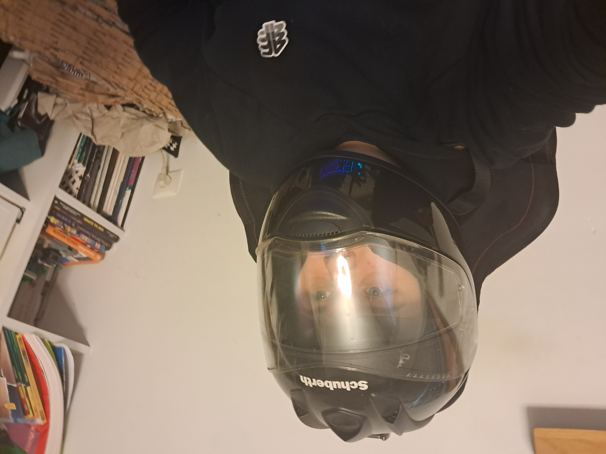

01 / SIM RACING
Formula & circuit racing
Training in iRacing, currently focused on the Formula 1600. Experience also includes F1 titles, Assetto Corsa and Automobilista 2.
iRacingF1 seriesAssetto CorsaAutomobilista 2
DRIVER PORTFOLIO · POLAND
Sim racing · Karting · Motorsport
Developing as a racing driver. Focused on learning, consistency and progress — on and off the track.

01 — ABOUT
I'm a young motorsport enthusiast from Poland, developing my skills through sim racing and real-world karting.
I focus on racecraft, consistency, car control and understanding the details that make a difference over a race distance. I'm still at the beginning of my journey, so every training session and competition is an opportunity to improve.
02 — EXPERIENCE
A growing foundation in virtual and real-world motorsport.
01 / SIM RACING
Training in iRacing, currently focused on the Formula 1600. Experience also includes F1 titles, Assetto Corsa and Automobilista 2.
02 / KARTING
Karting experience includes sessions at S8 and participation in karting league races. Working on awareness, control and racecraft.

03 / COMPETITION
Podium finishes in smaller sim racing leagues and experience in online league events. No major championship results claimed at this stage.
The focus is on building experience step by step.
03 — NEXT STEPS
Targeting participation in a future season, subject to the official calendar and qualification requirements.
A longer-term development goal in formula racing.
Long-term ambition to progress towards top-level competition, including the F1 Sim Racing World Championship.

04 — APPROACH
Practice, review, repeat. I value honest feedback, measurable improvement and learning from every race — regardless of the result.
Watch my videos ↗05 — CONTACT
For racing, media or partnership enquiries, feel free to get in touch.
For formal sponsorship discussions, please contact me together with my parent or legal guardian.